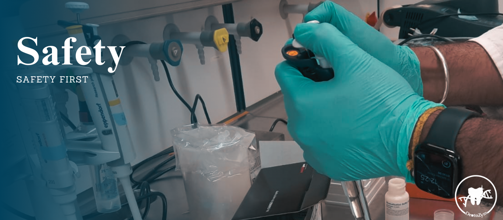

Pichia pastoris is employed in our project to produce the enzymes since they are glycosylated. Pichia pastoris is most stable in its vegetative haploid state [1]. However, it can form spores under nitrogen limiting conditions [2]. We prevented this from happening through the usage of media and agar that is not limited in nitrogen like YPD medium as well as agar and minimal dextrose agar. Furthermore, we paid attention to always contain the organism in closed environments like clean benches or different containers like agar plates or Eppendorf tubes.
As we wanted to develop a product against caries causing biofilms. We had to tackle the challenge of finding a way to carry out a valid but safe proof of concept experiment. The most valid proof of concept would be testing our enzymes, peptides and lipid with caries-causing biofilms or our main target Streptococcus mutans. Thus, we contacted the group of Professor Dr. Susanne Bailer from the Fraunhofer IGB in Stuttgart, which are experienced in working with S. mutans and have a S2 laboratory in their facility. We considered working in the S2 laboratory ourselves, after an extensive medical check-up and safety training with the employees of the group. But later we had to change this plan and aimed for the experiments to be performed by the employees of the Fraunhofer IGB.
As an alternative to the employment of S. mutans we also considered performing a cell-free proof of concept experiment. Dextran polymers, which are components of the exopolysaccharide matrix of biofilms [3], should be utilized instead of a whole biofilm to test the activity of our enzymes.
Moreover, we also discussed the usage of certain Streptococcus salivarius strains as alternative organisms to S. mutans. These S. salivarius strains are similar to S. mutans and part of caries causing biofilms [4] while still being classified as S1 organisms and were therefore also considered to be alternatively employed.
However, it is important to note that we unfortunately did not reach the proof-of-concept phase of the project, thus none of the considerations above were put into practice.
In order to ensure safe laboratory work, we scheduled a safety briefing day with several training sessions regarding waste disposal, chemical safety and genetic engineering safety. The participation was mandatory for everyone working in the laboratory. During the briefings we also toured the laboratory to ensure that everyone knows the location of eye wash, first aid kits, fire extinguisher among other things.
The people that were authorized to work in the laboratory had to follow certain guidelines. For instance, working alone in our laboratory was not permitted and a supervisor of our team had to be always nearby. Devices in the lab that had a higher accident probability, like centrifuges, required additional safety instructions. Whenever we had concerns or questions regarding safety topics, various people were available to guide and supervise our experimental designs.
[1] Chen MT, Lin S, Shandil I, Andrews D, Stadheim TA, Choi BK. Generation of diploid Pichia pastoris strains by mating and their application for recombinant protein production. Microb Cell Fact. 2012 Jul 2;11:91. doi: 10.1186/1475-2859-11-91. PMID: 22748191; PMCID: PMC3503796.
[2] Joan Lin Cereghino, James M. Cregg. Heterologous protein expression in the methylotrophic yeast Pichia pastoris. FEMS Microbiology Reviews, Volume 24, Issue 1, 2000, Pages 45-66, ISSN 0168-6445, https://doi.org/10.1016/S0168-6445(99)00029-7.
[3] Heng Li, He Liu, Lei Zhang, Ahmed Hieawy, Ya Shen. Evaluation of extracellular polymeric substances matrix volume, surface roughness and bacterial adhesion property of oral biofilm. Journal of Dental Sciences. Volume 18, Issue 4. 2023. https://doi.org/10.1016/j.jds.2022.12.022.
[4] Begić G, Badovinac IJ, Karleuša L, Kralik K, Cvijanovic Peloza O, Kuiš D, Gobin I. Streptococcus salivarius as an Important Factor in Dental Biofilm Homeostasis: Influence on Streptococcus mutans and Aggregatibacter actinomycetemcomitans in Mixed Biofilm. International Journal of Molecular Sciences. 2023; 24(8):7249. https://doi.org/10.3390/ijms24087249